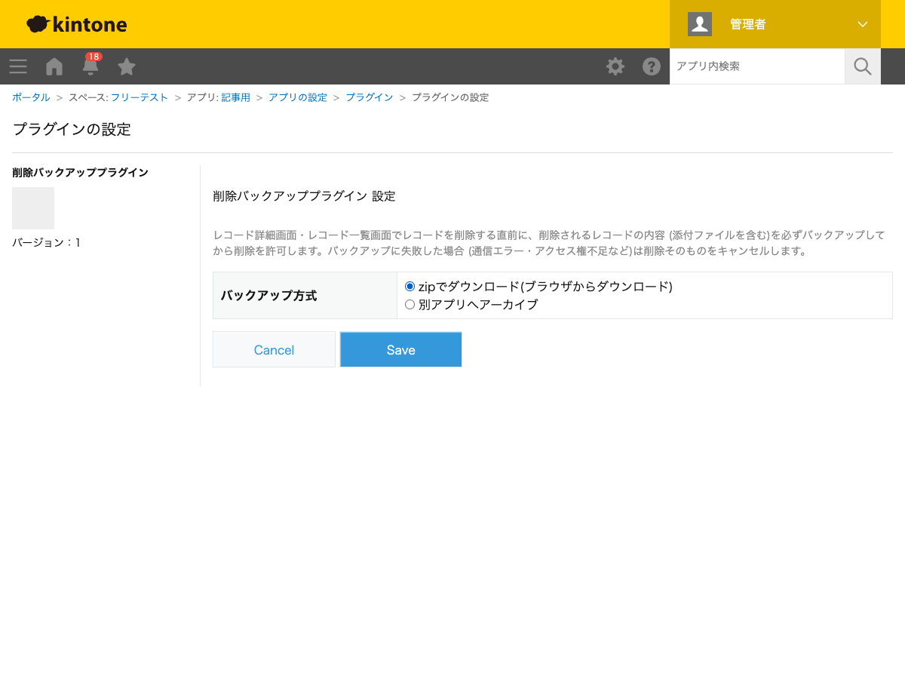
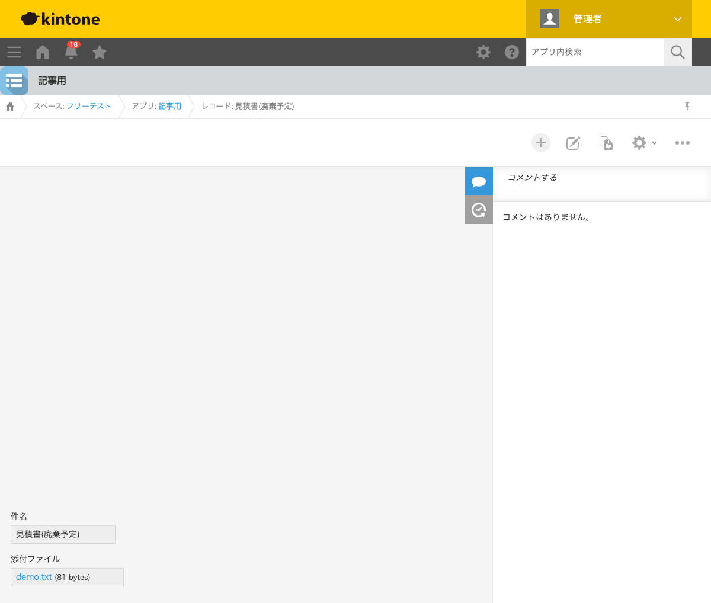
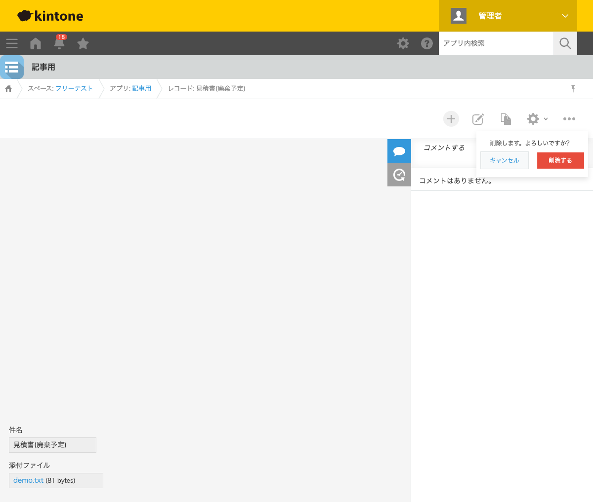
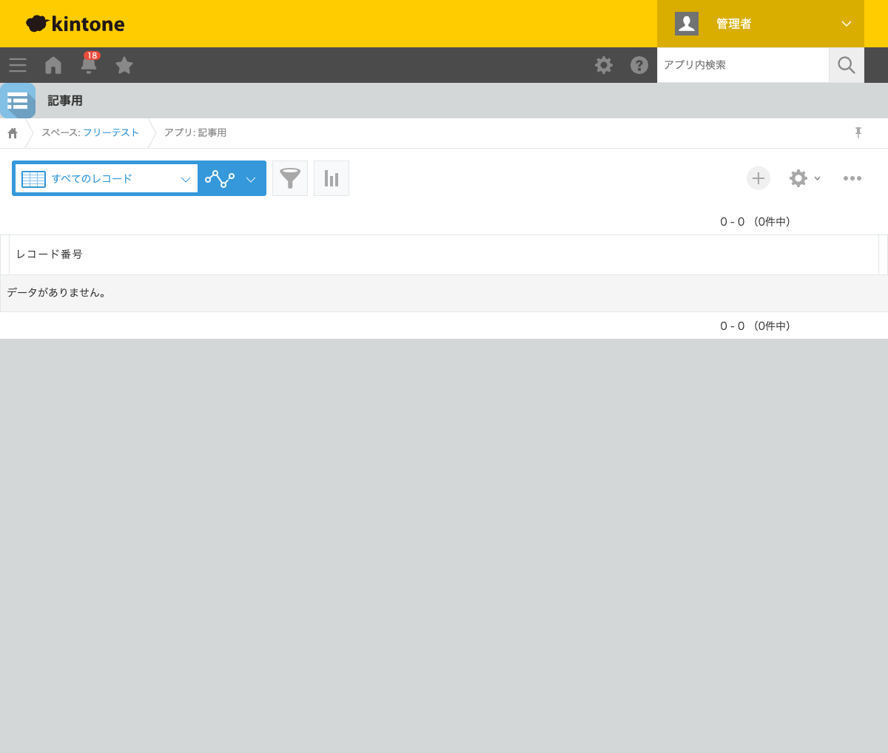

GovAppsプラグイン 安全性を確認できる無料kintoneプラグイン集
kintoneのレコード削除は一度実行すると元に戻せず、添付ファイルも含めて完全に失われます。 「誤って削除してしまった」を防ぐには、削除の直前に必ず内容を残す仕組みが必要です。この記事では、 無料プラグインでレコード削除前に自動でzipバックアップをダウンロードし、バックアップに失敗したら 削除自体を中止する方法を、実際の設定画面と削除結果つきで解説します。
kintoneの標準機能には、削除したレコードを復元する機能はありません。監査ログでいつ誰が削除したかは 追えますが、削除された内容そのもの(添付ファイルを含む)は標準機能では残せません。JavaScript カスタマイズを自作すれば、削除前イベントでバックアップ処理を挟めますが、添付ファイルの ダウンロード・zip生成・別アプリへの再アップロードまで実装し、かつ「バックアップが失敗したら 削除もキャンセルする」フェイルセーフまで組み込むのは簡単な作業ではありません。
「削除前に必ずバックアップを取る」機能を用意する方法は、大きく4つあります。それぞれの 向き不向きをまとめました。
| 方法 | 向いている場合 | 注意点 |
|---|---|---|
| kintone標準機能のみ | 削除頻度が低く、監査ログの記録だけで十分な場合 | 削除された内容そのものは復元できない |
| JavaScriptを自作する | 社内に開発者がいて、独自のバックアップ形式が必要な場合 | zip生成・ファイル再アップロード・失敗時のキャンセル処理の実装・保守が必要 |
| 有料の他社プラグイン | 予算があり、手厚いサポートを求める場合 | 月額課金が発生する。ソースコードが非公開で、外部通信の有無を利用者側で確認しにくいことが多い |
| GovAppsプラグイン(このプラグイン) | 無料で試したい、社内・庁内でセキュリティを確認してから導入したい場合 | PC専用(モバイルは対象外) |
GovAppsのプラグインはすべて無料・広告なしで、追加課金なしで使い続けられます。 ソースコードはGitHubで全公開しているオープンソースなので、 「本当に外部と通信していないか(ファイルのダウンロード・アップロードはkintone自身にのみ行っているか)」を 自治体・企業のセキュリティ担当者自身の目で確認できます(このプラグインも個別ページにセキュリティレビュー結果を掲載しています)。
削除バックアッププラグインは、バックアップ方式を選ぶだけで 設定が完了します。今回は「zipでダウンロード」方式で設定しました(もう1つの「別アプリへ アーカイブ」方式では、アーカイブ先アプリ・保存先フィールドをあわせて指定します)。

添付ファイル(demo.txt)を持つレコードの詳細画面から、通常どおり「オプション」→「レコードを削除」 を選ぶと、kintone標準の削除確認ポップアップが表示されます。


「削除する」を押すと、レコードが実際に削除される直前に、プラグインが自動でレコードの
内容と添付ファイルをまとめたzipファイル(backup_app{アプリID}_record{レコードID}.zip)
をブラウザからダウンロードします。zipの中には削除時点のレコード情報(record.json)と
添付ファイル本体が格納されています。ダウンロードが完了して初めて削除が実行されるため、
バックアップを取り損ねたまま削除される心配がありません。
